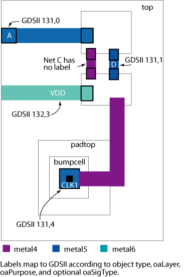

|
 |
 |
||||||
|
|
|
||||||
You can translate OpenAccess data to Stream data using the oa2strm command-line
executable. An OpenAccess library and a name for the output Stream file are
required to begin a translation.
Enter:
oa2strm -gds file -lib library [Optional Arguments]
oa2strm translates the OpenAccess library to the specified Stream
file. Use the -help or -h argument to display
command-line help. The command-line arguments are described in the following
table.
| Required Arguments | |||||||||||||||
|---|---|---|---|---|---|---|---|---|---|---|---|---|---|---|---|
| -gds file | Specifies the output Stream filename. | ||||||||||||||
| -lib library |
Specifies the library to translate. The library must exist in the library
definitions file in the current working directory or must exist in the library
definitions file specified with the -libDefsFile option. If the |
||||||||||||||
| Optional Arguments | |||||||||||||||
| -blockageType dataType | Specifies the GDS data type for translating blockages. If this is not specified, blockages are not translated. | ||||||||||||||
| -cell names | Specifies a set of cells to translate. The cell names must be separated by
whitespace. If you want to stream out parts of a design, using this option to
specify the required cells is one way to accomplish this. oa2strm translates
the specified cells together with their sub-cells, recursively, down to the
depth specified by the optional -hierDepth parameter. oa2strm
ensures that no cell is translated multiple times.
If the –view option is not specified, the default view name layout
is used.
If the -cell option is not used, oa2strm streams out all cells in the library that is specified with -lib. |
||||||||||||||
| -cellMap file |
Specifies the cell mapping file to use during translation. You must specify the complete path to the file. The format for the mapping file is: <library name> <cell name> <view name> <stream structure name>
Lines in the cellMap file that are blank and lines beginning with the comment character # are ignored. Sample Cell Mapping File#library name cell name view name stream name des_lib nand2 layout nand2_1 sdes_lib nand2 layout nand2_2 des_lib cell_nu layout cell_nu sdes_lib cell_nu layout cell_new Each stream name in the cell mapping file must be unique. |
||||||||||||||
| -charLimit |
Specifies that |
||||||||||||||
| -donutNumSides number | Specifies the number of sides for the boundary that is generated when writing
donut objects.
The default value for this argument is 64. |
||||||||||||||
| -ellipseNumSides number | Specifies the number of sides for the boundary that is generated when writing
ellipse objects.
The default value for this argument is 64. |
||||||||||||||
| -fontMap file |
Specifies the font mapping file to use during translation. You must specify the complete path to the file. The format for the mapping file is: <stream id> <OpenAccess font name> If you specify a font mapping file, font names found in the map file translate to the Stream Id specified. Font names not found in the mapping file translate to Stream Id 0. Valid values for Stream Id are 0, 1, 2, and 3. Valid values for Font Name are EuroStyle, Gothic, Math, Roman, Script, Stick, Fixed, Swedish, and MilSpec. Lines in the fontMap file that are blank and lines beginning with the comment character # are ignored. Sample Font Mapping File#stream ID oa font name 0 EuroStyle 1 Roman 2 Gothic 3 Script |
||||||||||||||
| -help | -h | Prints command-line help. | ||||||||||||||
| -hierDepth number | Specifies the hierarchical depth for translation. The hierDepth argument
is optional.
The default depth if this option is omitted is 20. |
||||||||||||||
| -labelDepth number | Specifies to what depth of the design hierarchy labels are generated. If the -hierDepth option is also used, and the -labelDepth value is greater than the -hierDepth value, labels are generated for all levels of the hierarchy. If the -labelDepth option is omitted, labels are generated for only the top level of the design. | ||||||||||||||
| -labelMap filename | Specifies a label map file that determines the object type for which labels are
created and determines the mapping of shapes on an oaLayer and oaPurpose pair
to a GDS layer and GDS data type pair. The object type specified in the label
map file is either a terminal or a net. The label map file uses five required
fields and an optional oaSigType field. The fields are listed in the following
table.
Labels are created for each top level cell, or if the -labelDepth option is used, labels are created for each top level cell and its children down to the specified level of hierarchy. Labels are created for all nets at the top level. If a net has a terminal, and the terminal name differs from the net name, the label that is created corresponds to the terminal name. If a label map file includes more than one mapping for a combination of object, oaLayer, oaPurpose, and oaSigType, the first of these entries in the label map file is used and a warning is issued. The label map file format uses one line per mapping where the five or six fields are each separated from others by tabs or spaces. Lines beginning with the # character are comment lines and are ignored by the translator. Following is an example of a label map file. # Example label map file # Object oaLayer oaPurpose GDS Layer Number GDS Data Type oaSigType Term Metal5 drawing 131 0 Term Metal6 drawing 132 0 Net Metal5 drawing 131 1 Net Metal6 drawing 132 1 Term Metal5 drawing 131 2 power Term Metal6 drawing 132 2 power Net Metal5 drawing 131 3 power Net Metal6 drawing 132 3 power Term Metal5 drawing 131 4 clock Term Metal6 drawing 132 4 clock Net Metal5 drawing 131 5 clock Net Metal6 drawing 132 5 clockThe optional oaSigType field specifies the signal type of the net associated with a terminal. The oaSigType string is case sensitive and must match the spelling and case used for the signal name in OpenAcess. Label map entries that do not specify a signal type apply to all signal types that are not specified elsewhere in the mapping file. For more information see Using a Label Map File. |
||||||||||||||
| -layerMap fileList |
Specifies a quoted, space-separated list of one or more layer mapping files to be used during translation. You must specify the complete path for each layer map file. The format for the layer map file is: <layer name> <layer purpose> <GDS layer> <GDS data type> [<oaMaterial> [<oaMaskNumber>]] [<Qualifier>] If you specify a layer mapping file, objects on layer and purpose combinations found in the map file are created on the GDS layer and data type specified in the file. Objects on layer and purpose combinations not included in the map file are not created. If you do not specify a mapping file, objects are created on their corresponding layer number and purpose 0. The oaMaterial, oaMaskNumber and Qualifier column are optional. However, an oaMaskNumber may only be specified if the oaMaterial is also specified. The following optional qualifiers are currently supported:
Note: The layer mapping file can specify multiple entries for the same database layer/purpose pair if the GDS layer/data type pair values are different (see the two Metal5 entries in the example layer mapping file). The complete line in the layer mapping file must be unique. If there are duplicate entries, a warning is issued and the duplicate entry is ignored. Sample Layer Mapping File#layer name layer purpose GDS layer GDS data type oaMaterial oaMaskNumber Qualifier Metal1 drawing 1 0 metal 6 Metal1 fill 1 1 metal 6 floating Via1 drawing 2 0 cut 7 Metal2 fill 3 1 metal floating Via2 drawing 4 0 cut 9 Metal3 drawing 5 0 metal 10 Metal3 fill 5 1 floating Metal3 oaFillOPC 5 2 floating Via3 drawing 6 0 cut 11 Metal4 drawing 7 0 metal 12 Via4 drawing 8 0 cut Metal5 drawing 9 0 Metal5 drawing 9 3 Via5 drawing 10 0 |
||||||||||||||
| -libDefFile file | Specifies the lib.defs file to load. The path to the lib.defs file can be a full or relative path. If this option is omitted, the default search mechanism of the DM system is used to find and load the lib.defs file. | ||||||||||||||
| -logFile file | Specifies the log filename. If this option is omitted, the log filename defaults to oa2strm.log. | ||||||||||||||
| -noExportRefLibCells |
Specifies that |
||||||||||||||
| -noInfo msgIds | Suppresses the specified INFO messages. msgIds is a quoted, space separated list of numbers. Each number in the list represents the numerical portion of the ID for the message you want to suppress. None of the numbers in the list may be zero. Suppressed messages do not appear on the terminal or in the log file. | ||||||||||||||
| -noOutputRoutes |
Specifies that |
||||||||||||||
| -noOutputTextDisplays | Specifies that oa2strm does not translate textDisplays. If this
option is not specified, the default behavior is to translate textDisplays.
Only oaAttrDisplay, oaPropDisplay and oaTextOverride textDisplay objects are
translated. The oaInstAttrDisplay and oaInstPropDisplay objects are not
translated.
textDisplays are translated as labels and written as Stream TEXT records. This translation is asymmetric, which means that in a round trip translation, TEXT records translate back to OpenAccess as oaText objects, not as oaTextDisplay objects. |
||||||||||||||
| -noOutputUnplacedInst |
Specifies that oa2strm does not translate unplaced instances. If this option is not specified, the default behavior is to translate unplaced instances as Stream SREF records. Unplaced instances have a placement status as oacUnplacedPlacementStatus. |
||||||||||||||
| -noWarning msgIds | Suppresses the specified WARNING messages. msgIds is a quoted, space separated list of numbers. Each number in the list represents the numerical portion of the ID for the message you want to suppress. None of the numbers in the list may be zero. Suppressed messages do not appear on the terminal or in the log file and are not included in the total of WARNING messages displayed in the summary. | ||||||||||||||
| -pathToPolygon | Converts orthogonal and diagonal oaPath objects, and orthogonal oaPathSeg objects, to polygons and writes the polygons as boundary records. This option does not affect the output of routes. If this option is not used, oa2strm writes oaPathSegs as path records. | ||||||||||||||
| -propMap file |
Specifies the property mapping file to use during translation. You must specify the complete path to the file. The format for the map file is: <stream id> <object type> <property name> If you specify a property mapping file, By default, if you do not specify a mapping file, properties are not written to the Stream file. Lines in the propMap file that are blank and lines beginning with the comment character # are ignored. Sample Property Mapping File#stream Id object name 1 Rect instP11 2 Polygon poly1 3 Path sigName 4 Text pad32 5 Pin io_term 6 ScalerInst contact |
||||||||||||||
| -propValueOnly |
Specifies that <property name> = <property value> |
||||||||||||||
| -rectAsBoundary |
Specifies that all rectangles are created as boundary records. If you omit this option, the translator creates rectangles as BOX records. If -ver 3 is included, the translator always translates rectangles to boundary records because version 3 does not support BOX records. |
||||||||||||||
| -techLib library |
Specifies the technology library to use during the translation. If you specify a
library name, the library must exist. |
||||||||||||||
| -templateFile file |
Specifies a file containing arguments to If you specify a template file, arguments on the command line have precedence over arguments specified in the file. So, if the same argument exists in the template file and in the command line, the translator uses the argument on the command line. Specify arguments in a template file as follows:
Sample Template File#oa2strm arguments for AC33 logfile oa2strm.log56 hierdepth 2 cellmap oa2strm.cell.map toupper charlimit noexportreflibs fontmap oa2strm.font.map nooutputroutes rectasboundary layermap oa2strm.layer.map propmap oa2strm.prop.map propvalonly |
||||||||||||||
| -text <namespace> | Specifies namespace mapping for textDisplays. Some textDisplays, such as oaAttrDisplay, either require or support namespace mapping. For consistency, any of the OpenAccess namespaces (except OS namespaces like oaUnixNS and oaWinNS) can be specified. The valid arguments for this option are "native", "cdba", "lef", "def", "verilog", "vhdl", "spef", "spice", and "spf". If this option is not specified, "native" is used as the default. | ||||||||||||||
| -toLower |
Specifies that The arguments |
||||||||||||||
| -toUpper |
Specifies that The arguments |
||||||||||||||
| -toLowerLabel | Converts labels to lower case. | ||||||||||||||
| -toUpperLabel | Converts labels to upper case. | ||||||||||||||
| -viaMap file | Produces a via mapping file that lists all of the structures written to the
Stream file that are masters for CustomViaDefs. Custom Via Mapping File Syntax: # Comment # Blank lines are ignored <Structure Name> <oaCustomViaDef Name> <Layer1 Name> <GDS Layer> <Layer2 Name> <GDS Layer>Example Via Mapping File: # Custom Via Master List for aDesign via1 m1m2via m1 10 m2 20 via2 m2m3via m2 20 m3 30 |
||||||||||||||
| -view name |
Specifies the view name of the cells to translate. It is an error to specify the |
||||||||||||||
| -v | Prints tool, format, and library version information. | ||||||||||||||
| -ver [ 3 | 5 | 6 ] | Specifies the Stream format version for writing the Stream file. Version 6 produces the same format as version 5 with the only difference being the version number. If you omit this option, the format version defaults to 5. Specifying version 3 implies the -rectAsBoundary mode of operation because Stream version 3 does not support BOX records. | ||||||||||||||
| -version | Prints tool and format version information. | ||||||||||||||
Note: Command line arguments specifying library, cell, and view names are interpreted according to the Native name space. See Native Name Space in the Name Mapping article of the Programmers Guide for details about the native name space.
If your library definitions file has errors, or any of the referenced libraries cannot be opened, either an error message is generated and translation halted or, if the library is not required to complete the translation, translation proceeds without an error or warning. For more information about this behavior, see the Handling Errors in lib.defs Files section in the Programmers Guide chapter How Translators Use Libraries.
A namespace is a set of rules that define the legal characters and determine how names are interpretted. This translator uses the oaNative namespace to interpret library, cell, and view names in the command line and for other names that refer to name-mapped OpenAccess objects, such as net and module names.
The -labelMap option adds label information to a GDSII file so that an LVS tool can compare the GDS net names to the corresponding nets defined in the logical netlist of a design. This aids mask shops in ensuring clean DRC and LVS checks of a design.
When the -labelMap option is used, oa2strm first tries to find a shape on a mapped layer that is associated with the oaTerm of the oaNet. If an oaPinFig is found on a layer mapped for terms using the oaSigType associated with the oaTerm, a label is created in the center of that shape (the label's origin must be inside the shape). If no oaPinFigs exist on layers mapped in the label map file for terms, the translator searches the oaNet for shapes on the mapped layers for nets.
If no shapes are found while searching the oaNet, a search is made for the oaPinFigs associated with the oaTerms in the masters corresponding to the oaInstTerms on the net. This search is confined to layers mapped to terms with the same oaSigType as the parent oaTerm. If an oaPinFig is found on a mapped layer, a label is created at that location in the context of the parent. This label has the name of the oaTerm at the top level that connects to this oaInstTerm, and only this label is generated. If there are no oaPinFigs at this level of the hierarchy, the shapes of the net are examined, and the process repeats and progresses down the hierarchy until a mappable shape is found.
The following example label map file and figure help visualize how labels map to a GDS layer and data type. The paragraph following the figure explains how the mapping is determined.
# Example label map file # Object oaLayer oaPurpose GDS Mask Number GDS Data Type oaSigType Term Metal5 drawing 131 0 Term Metal6 drawing 132 0 Net Metal5 drawing 131 1 Net Metal6 drawing 132 1 Term Metal5 drawing 131 2 power Term Metal6 drawing 132 2 power Net Metal5 drawing 131 3 power Net Metal6 drawing 132 3 power Term Metal5 drawing 131 4 clock Term Metal6 drawing 132 4 clock Net Metal5 drawing 131 5 clock Net Metal6 drawing 132 5 clock
The figure illustrates a simple example of an oaDesign named "top" with an oaTerm called "A" that has an oaPin, which has an oaPinFig (an oaRect on metal5). The label map file maps terms on oaLayer metal5 with oaPurpose drawing to the designated GDS layer and data type. Since the term has an oaPinFig on a mapped layer, the label overlaps the oaPinFig shape and is created on 131, 0.
The next mapping is that of another oaTerm called "VDD", which has no oaPinFig, but it has a shape on the net associated with the term. VDD is oaSigType power, so the translator uses the mapping for oaLayer metal6 and oaPurpose drawing, which maps to GDS 132,3. Regardless of the name of the net, oa2strm finds the first shape on a mapped layer (in this case the shape on metal6), and creates a label with the term name that overlaps that shape.
The example also includes an oaTerm called CLK1 in oaDesign "top". It connects to a net in the oaDesign "padtop". This in turn connects to a net in the oaDesign "bumpcell" that has a metal1 shape on it. The oaNet that the oaTerm CLK1 is connected to is of type "clock". In oaDesign "top", the CLK1 net has metal4 shapes on it. However, there is no mapping to create labels for metal4 shapes. Therefore, the translator must traverse from the oaTerm CLK1 in the top design and to the net in order to determine that there are no shapes on mapped layers associated with the net. The oaTerm of each oaInstTerm must then be checked for an association with the net. If those oaTerms have no geometry, oa2strm checks the shapes on the nets associated with those terms, and then continues the process by checking the instTerms. In this case, the translator must traverse two levels down into the hierarchy to find the shape on metal5 and generate a label with the oaTerm name "CLK1" in the location of that shape in the context of "top". It uses the Term mapping for metal5 drawing layers for signals of type clock and maps the label to 131,4.
Net C has no labels because it has no shapes on a mapped layer. Net D has a label on 131,1 because it is a top level net, and it has an oaFig associated with the net on a mapped layer.
Translators emit messages that report translation progress, report warnings about unusual data or conditions, or report problems with files or data that caused partial or complete translation failure. These messages are written to a log file so you can review translation status, identify error and warning conditions, and consider whether additional actions are needed.
OpenAccess translators use a standard message format to ensure comprehensive and consistent messaging. This message format consists of three elements, which are: message type keyword, message prefix, and message text.
In addition to the three standard elements, messages can also include two optional elements. An optional filename/line number element is included, when available, to more precisely identify the source of a problem or condition within the source data file. A context string is another optional element that is included, when available, to identify the type of data object that caused the message to be emitted. The following example shows a typical error message that includes the optional filename and line number element.
ERROR: (OALEFDEF-50004): file.lef(123): A cell was not specified. Translation was terminated.
You must specify a cell.
One benefit of this message format is that it allows you to sort, filter, and examine only those types of messages that interest you. The keyword at the start of each message is either ERROR or WARNING and is always all uppercase. The message prefix identifies the translator family and the specific message source within the translator. The message prefix is a stable value that will not change between versions even when the message text gets updated. This makes it suitable for routine sorting and filtering.
If you seek assistance for resolving an issue related to a translator error or warning message, be sure to retain the message type keyword (ERROR or WARNING), and retain the message prefix to identify the translator family and the message source. Also make note of the filename/line number and context information if these are included in the message.
Copyright © 2003-2010 Cadence Design Systems, Inc.
All rights reserved.